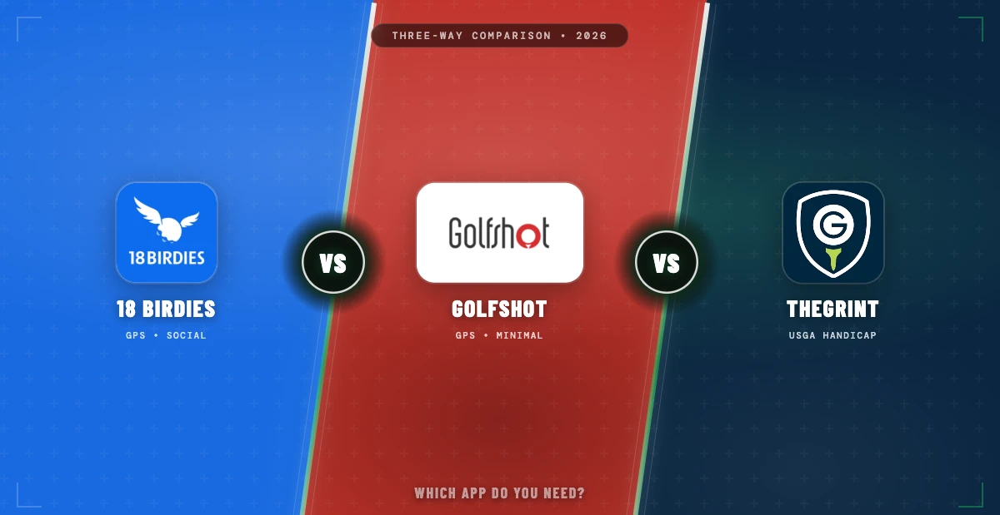

Head-to-Head Comparison of the Three Biggest GPS and Scoring Apps
April 22, 2026 · 8 min read · Stephen Pickering

Key takeaway: 18Birdies is best for casual and social golfers. Golfshot is best for minimalist GPS users. TheGrint is best for USGA-compliant handicap tracking. But all three miss structured practice — the between-round work that actually lowers handicaps. The best combination: a GPS app plus a dedicated practice tool.
These three golf apps dominate the GPS and scoring category. They look similar at first glance — all offer yardages, scorecard entry, and some level of stat tracking — but they serve slightly different golfers. This 18Birdies vs Golfshot vs TheGrint breakdown covers where each one wins, where each one falls short, and the important feature all three are missing: structured practice that actually improves your game between rounds.
You want the most polished, feature-rich free app with social features, course-of-the-week content, and the biggest course database. Best for casual and regular golfers who play with friends and want the app to be part of the round experience.
You want a clean GPS-first app without social features. Best for golfers who prefer focused tools — in, out, track the round, no community feed or badges.
You care about an official USGA-compliant handicap and don’t want to join a club to get one. Best for tournament golfers, casual handicap maintainers, and anyone who wants GHIN-style tracking without paying club membership fees.
All three apps deliver yardages to the front, middle, and back of greens within 2–3 yards of accuracy on mapped courses. Differences:
- 18Birdies: Largest course database (40,000+ courses worldwide). Handles international courses better than the other two. - Golfshot: Most conservative yardages (tends to play longer). Cleanest yardage display. - TheGrint: Solid GPS in the US. Coverage outside the US is weaker.
Practical difference: negligible for most rounds. If you travel internationally, 18Birdies is the safest choice.
Scorecard entry is fast and reliable in all three. Differences come down to interface preference:
- 18Birdies: Gamified — badges, streaks, live leaderboards for group rounds - Golfshot: Minimalist — just score, stats, and yardages - TheGrint: Scorecard entry is fine; the interface is built around handicap posting rather than during-round play
Basic stats are similar across all three: score, fairways hit, greens in regulation, putts per hole. None of them approach the depth of Arccos or Shot Scope for strokes gained analysis.
- 18Birdies Premium: Adds a bit more stat depth and an AI caddie for club recommendations - Golfshot Premium: Has club recommendations and hazard yardages but stat depth is similar to the free tier - TheGrint: Stats are functional, focused on handicap-relevant metrics
For real strokes-gained-level data, none of these three are the right tool — you’d need Arccos or a sensor-based system.
This is where TheGrint clearly wins.
- TheGrint: Actual USGA-compliant handicap service. Submit scores, get a Grint Handicap (H.I.) that tracks like an official WHS index. - 18Birdies: Provides a handicap estimate, but it’s not USGA-official. Fine for casual reference, not for tournament use. - Golfshot: Same as 18Birdies — estimate only, not official.
If you care about having an official, postable handicap, TheGrint is the answer.
- 18Birdies: Strong — group rounds, live leaderboards, community feed, golfer-to-golfer challenges - Golfshot: Minimal — a few social features but not the focus - TheGrint: Some community features but secondary to handicap tracking
If you play with the same group regularly and want a shared experience, 18Birdies is the only real choice here.
- 18Birdies: Free tier usable forever. Premium roughly $60–$90/year. - Golfshot: Free with course limits. Pro tier around $40/year. - TheGrint: Free with ads. Pro tier around $30/year (removes ads, adds advanced stats).
All three are reasonable. Golfshot Pro and TheGrint Pro are the cheapest. 18Birdies Premium costs the most but offers the most features.
Looking deeper at GPS-only alternatives? See the full golf app review.
Golf App Review 2026 →All three apps are round tools. They track what happens Saturday morning on the course. What happens Monday through Friday — the six days a week you’re not playing — none of them handle well.
18Birdies has some drill video content. Golfshot has a practice mode. TheGrint is pure tracking. None of them give you scored drills with benchmarks, session-to-session tracking, or progress data on specific skills like lag putting or chipping proximity.
This is the reason your handicap doesn’t drop even though you use one of these apps religiously. Tracking your rounds shows you what happened. It doesn’t fix anything.
The golfers who improve fastest use two apps in parallel: one for on-course data (one of these three) and one for structured practice. The GPS app tracks your rounds; the practice app structures your sessions; the combination closes the loop between “what went wrong” and “how to fix it.”
Scoring Zone fills the practice app role. It covers the short game gap all three of these apps leave: 50+ scored drills with benchmarks, the Performance Hub that generates a Short Game Handicap, and session-to-session tracking that shows whether your practice is actually moving the needle. It’s a PWA that runs on iOS and Android, and it’s free during early access.
See the Performance Hub — full short game assessment with Short Game Handicap.
Performance Hub →18Birdies. The free tier covers everything you need, the social features add engagement, and the course database is the broadest. The Premium upgrade is optional for heavy users.
Golfshot. Cleanest GPS and scoring experience. No social noise, no gamification — just yardages, scores, and stats. Pro tier is inexpensive if you want more features.
TheGrint. USGA-compliant handicap service without requiring club membership. The only one of the three that gives you an official postable handicap index.
18Birdies (free) + Scoring Zone (free). 18Birdies handles your on-course tracking and scoring; Scoring Zone handles your between-round practice with scored drills and benchmarks. Neither costs anything during Scoring Zone’s early access, and together they cover both halves of the improvement loop.
It depends on priority. 18Birdies is the most polished all-round app — best for casual golfers. Golfshot is the cleanest GPS and scoring tool — best if you don’t want social features. TheGrint is the USGA-compliant handicap tracker — best if you care about official handicap maintenance.
All three are within 2–3 yards accuracy on mapped courses. Golfshot tends to have the most conservative yardage estimates. 18Birdies has the largest course database. TheGrint is solid but slightly behind on course coverage outside the US.
TheGrint is USGA-compliant and calculates your handicap index from submitted rounds. 18Birdies and Golfshot provide handicap estimates, but neither is an official handicap service. For an official WHS handicap, you still need club membership or a national handicap service.
Structured practice. All three focus on on-course tracking — GPS, scoring, round stats. None provide scored practice drills, benchmarks by handicap level, or session-to-session practice tracking. To improve between rounds, you need a dedicated practice app alongside any of these GPS tools.
Stephen Pickering
3-handicap golfer with 25 years on the course. Built Scoring Zone to bring structure and pressure to short game practice. Writes about what actually works from the practice green, not the press box.
Pair your GPS app of choice with Scoring Zone for structured short game practice — scored drills, benchmarks, and real improvement. Free during early access.
Download Scoring Zone Free →Full access to all drills, stats, and features. No payment required.
Get Scoring Zone Free →